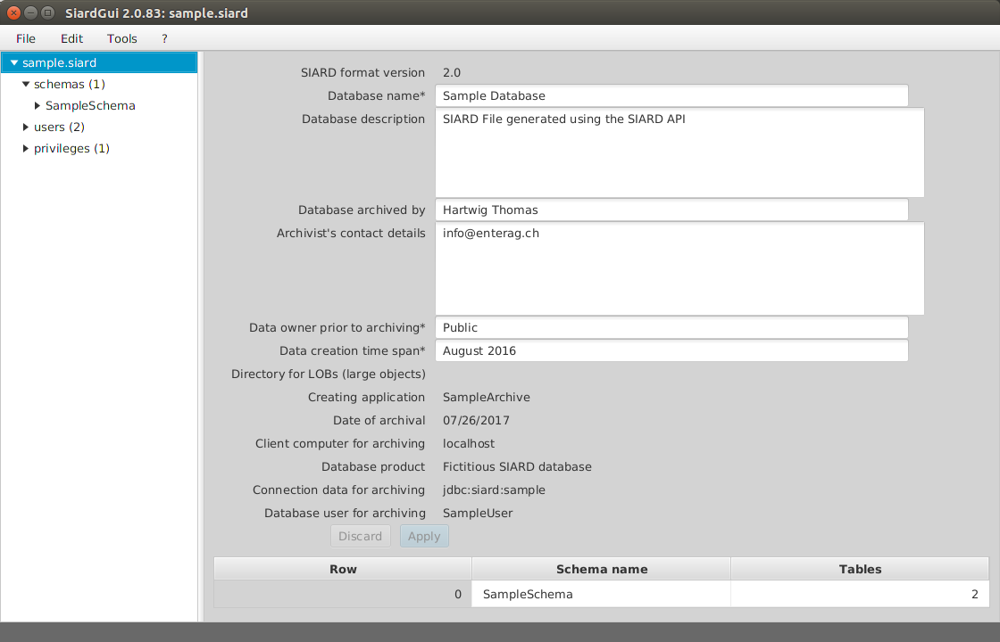

SIARD Suite 2.2 - Execution of SiardGui
The SiardGui program features an interactive graphical user interface (GUI). Using SiardGui, one can:
- download a database and store it in a SIARD archive,
- display, variously sort and browse, manually add and change a SIARD archive's meta data as long as the primary data are not affected,
- display, variously sort and browse the primary data in a SIARD archive,
- upload a SIARD archive into a database for research purposes,
- download the meta data for a SIARD archive (without primary data), from a database in order to get a first overview of the archiving process,
- import a template of meta data with existing descriptions for a SIARD archive.
SiardGui is the central instrument with which SIARD formatted data are processed. Primary data cannot be changed. SiardGui is not suitable for complex research. For complex research, it is recommended to load a SIARD archive into a database system and use database techniques.
The conversion of the database fields of type TIME and TIMESTAMP depends on the local time zone. If the time 15:30 is stored on a machine in Zurich, then it will be stored as the UTC time 14:30 (in Winter!) in the XML meta data. If you would prefer to interpret the times in the database unchanged as UTC times, you must start SiardGui with the option
-Duser.timezone=GMT
It is possible to call SiardGui with the name of a SIARD file to be opened as single argument. This permits setting siardgui.cmd as the default application for opening files with a .siard extension.
Initial Execution
The SIARD Suite is delivered as a ZIP file and must first be unpacked. The file SiardGui.jar is situated in the lib folder of the distribution. If JAVA is installed correctly, one can execute the program under Windows by double-clicking on it. One can also execute the platform-specific script siardgui.cmd (Windows) or siardgui.sh (LINUX).
If this does not work or one is using a different operating system, SiardGui can also be started from the command line in the SIARD Suite's lib folder as follows:
javaw -jar lib/siardgui.jar (Windows) java -jar lib/siardgui.jar (all platforms)
For this to succeed, JAVA's bin folder must have been added to the PATH variable. Normally that was already done by the installation process of JAVA. Otherwise, one must write out the full path name of the executable java program (e.g.
"C:\Program Files\Java\jre1.8.0_144\bin\javaw.exe" -jar lib/siardgui.jar
including the quotation marks).
Upon initial execution of SiardGui, this type of message appears:
As SiardGui doesn't know the user's language at this point, the language of this message depends on the operating system language and the language chosen when JAVA was installed.
If this message is answered with Yes, one is given the possibility to enter a new or empty folder name where a copy of the SIARD distribution should be installed. After the successful installation, SiardGui can, in future, be started from the chosen folder or from the installed desktop icon.
Irrespective of whether SiardGui is started only from USB-Stick or CD-ROM or whether it is installed on the user's PC, the following main window appears.
Main Window
The main window consists of a menu (top), navigation tree (left), content (right) and a status line (bottom).
The border between navigation and content can be freely adjusted. The size of the whole window can also be freely adjusted (but not below a defined minimum). When a SIARD file is loaded into SiardGui, the main window appears as follows:
The left pane is used to navigate in the meta data tree. In the upper region of the right pane one can enter or change alterable meta data which belong to the database object selected in the left pane.
Apply and Discard
The Apply button applies the changes to the meta data in the currently open SIARD file. Clicking on the Discard button undoes all changes made since the last Apply action.
Table of Sub-Objects
A table of the most important sub-objects is shown under the meta data. Clicking a column title sorts the table on this column. As tables in schemata and columns in tables have no natural ordering in the meta data and SiardGui normally displays in alphabetical order, this sort function is useful when finding one's way about in large database schemata.
Table of Primary Data
Under rows of each table its primary data are displayed. As tables can grow very large, it is impossible and not very useful to load and display all records at once. Instead an overview of at most 50 records distributed over the table is shown, when rows is selected. Then one can choose which branch to display in more detail until the level is reached where each record is shown.
When a column header of a primary data display of a table is clicked, the whole table is sorted (in a temporary XML file which is deleted when the program is closed). This may take a while but is very useful for navigating to a particular value of a column.
The column widths of the display of primary data can be changed by dragging the separator between column headers.
The value display in the table is only useful for short values. More explicit value display is available when a cell is double-clicked.
A simple value display shows the whole value and permits copying it to the clipboard.
Long text values (e.g. VARCHAR, CLOB or XML values) are displayed in the external text editor application which can be configured under the menu item Tools / Options. Under Windows the default for this application is Notepad.
Long binary values (e.g. VARBINARY or BLOB values) are display in the external binary editor application which can be configured under menu item Tools / Options. Under Windows the default for this application is the freeware program HxD, which is packaged with the SIARD distribution for convenience.
If one knows that a BLOB column holds values of a very specific type, e.g. images or PDF data, then one can choose a binary editor instead which is able to open this type of data.
User-defined data types (UDTs) are displayed hierarchically with the attribute names in gray and the values in white.
Each of these values can be double-clicked again in order to display it in detail.